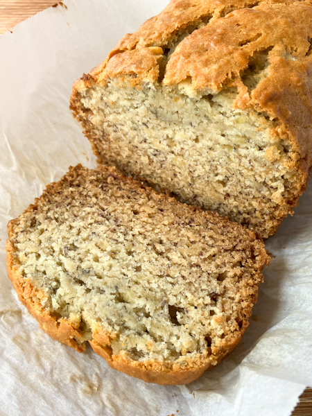

Home
Banana Bread

Description
This simple recipe for banana bread is big on taste! I have tinkered the recipe and bake time so that it comes out perfectly done and not burnt every time.
Ingredients
- ripe bananas
- flour
- sugar
- egg
- butter
- baking soda
- salt
Steps
- Preheat oven to 325 degrees Fahrenheit. Line a 9 inch loaf pan with parchment paper.
- Using a stand mixer, mix bananas until they are mashed.
- Add sugar and egg.
- Add melted butter.
- Add dry ingredients and mix thoroughly.
- Pour into loaf pan.
- Bake for 65 minutes.
- Let cool and enjoy!